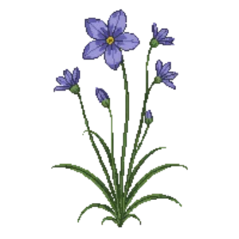

Western Blue-eyed Grass
Sisyrinchium bellum

Western Blue-eyed Grass is a perennial for edging, suited to full sun and loam or sandy soil, flowering Mar, Apr, May, Jun.
| Type | Perennial |
|---|---|
| Mature height | 30 cm |
| Spread | 20 cm |
| Aspect | full sun |
| Foliage | Deciduous |
| Hardiness | USDA 7a-10b, RHS H5 |
| Pollinator-friendly | Yes |
| Pet-safe | Yes |
Where to use it in a border
At around 30 cm, it sits best along the front edge, where a low, spreading habit reads best. Give it about 20 cm of room to spread, roughly 5 to the metre when planted in a drift. It is hardy across USDA zones 7a to 10b and rated H5 by the RHS, so check it suits your area before planting.
It appears in our lists of full sun, sandy soil, pollinator-friendly plants, pet-safe plants.
Border Builder uses Western Blue-eyed Grass's height, spread, soil, bloom months and companions to place it in a full border plan for your own conditions, on iPhone and iPad.
Flowering through the year
Worth knowing
- Its flowers are valued by bees and other pollinators.
Good companions
Plants that share its conditions and style, chosen to complement its place in the border:
- Golden Currantfor height behind it
- Purple Hopseed Bushfor height behind it
- Purple Sagefor height behind it
- Scarlet Bugleras a partner at the same level
- Showy Penstemonfor height behind it
- St. Catherine's Lacefor height behind it
Garden styles
Coastal Mediterranean Modern Xeriscape (low-water)
Sources
Bloom timing and hardiness drawn from: